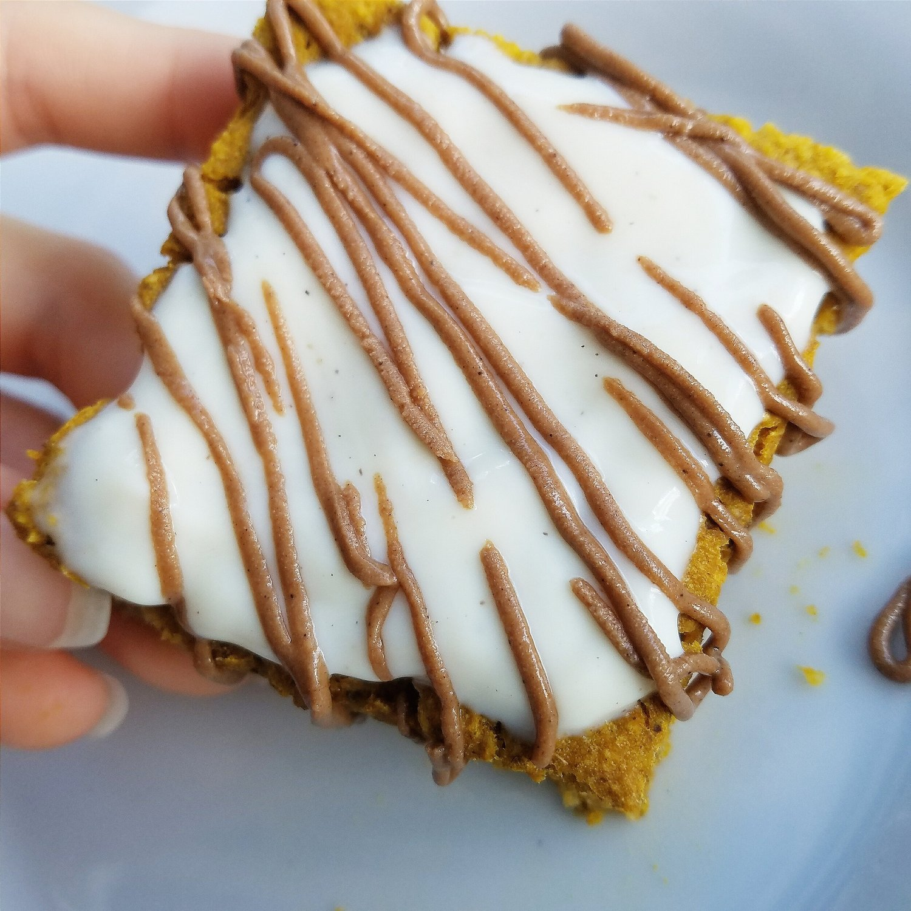
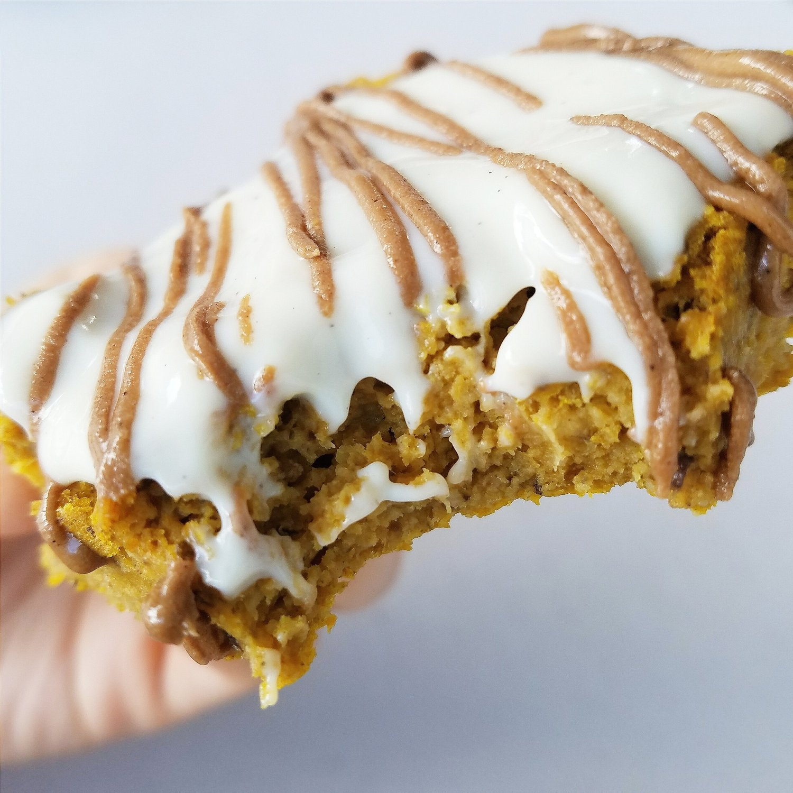

Vanilla Pumpkin Cake Bars (vegan, gluten free)


Fluffy, sweet vanilla pumpkin cake bars that will leave you smiling from having your taste buds hugged. This tasty, flourless treat is completely vegan, gluten free, and sugar free. This recipe is extremely simple to make for a perfect healthy snack or dessert.
I haven't been baking as much as I used to; I just don't have time! It makes me seriously miss being in college and having all hours of the day to bake, haha. Anyways... Weekends are for baking now! Every single time I bake I get way way too excited these days. And then I also devour the recipe within two days because it's a special occasion XD This recipe.... I finished in 24 hours. Partly because of reasons I just mentioned. But also partly because I finished a huge bike ride and my hunger was through the roof. If you're subscribed to my newsletter, you know I've been working on a big project for a couple months now. I haven't divulged too much of the information YET... but I can say that the announcement will be very SOON! Coming in on the home stretch of things. :) I don't want to give away information because honestly? I don't want the idea taken. I haven't seen anything done like this on social media or Instagram in the vegan/fitness community, and I'm so exciteddddd. It's not like a cookbook; it's beyond that! Lots and lots of work but it will be worth it. So basically my days are: work, bike, project, sleep, repeat. All the time! But it'll be finished soon and I'm so proud with how it has come together!!!!
For a while, I couldn't work on the project..which was a huge bummer. Simply because my neck was always in pain after the car crash. I could hardly tolerate the sitting at work, so to come home and sit at a desk was....not an option. I was horizontal as much as possible haha. But I got released from my chiropractor today!!! Woohoo!!! Everything is "back to original" with my spine finally. I didn't realize how serious whiplash is! Until I experienced it myself. But wow. So happy to not think about that neck pain all day long any more. And have my strength back! Feels good, yo.
Speaking of strength! Biking has been pretty awesome. Slowly but surely increasing my power and cadence. When I first started my cadence was pretty low... probably in the 70 range. Anything higher I couldn't maintain long because my IT band really bothered me. But now I can consistently and very easily stay in the 80-90 range, which is perfect. I'm going on another 40 miler and 25 miler this weekend, so I'm resting up today. Although I may bake again. Ha. Haha. Hahahah I have a problem. SOS I'm addicted to baking delicious vegan treats.
Try out these vanilla pumpkin cake bars! They are so soft and sweet. I like how the pumpkin seed protein gave them a little chew to the texture once they were chilled. These bars are so simple to make, and they are vegan, gluten free, and sugar free!!
Vanilla Pumpkin Cake Bars
Serves: 9
-
1.5 cups oats
-
1 scoop vanilla pumpkin seed protein (My Pure Goodness brand)
-
2 tsp baking powder
-
1/2 dropper of vanilla liquid stevia drops
-
1/2 cup canned pumpkin puree
-
1 cup unsweetened almond milk
Grind the oats into a flour. Then mix with the remaining ingredients until even and no lumps. Spray a 9×9 baking dish with nonstick spray and pour the yummy, tempting batter in. Lick the spoon. Bake at 350 F for 25-30 mins. Cut into 9 pieces, and enjoy! I topped mine with vanilla soy yogurt and fluffbutter. I also prefer to eat these cold, like most baked goods I make. :p
Nutrition info for 1 piece: 71 cals, 1 g fat, 11 g carbs, 4 g yummy plant protein